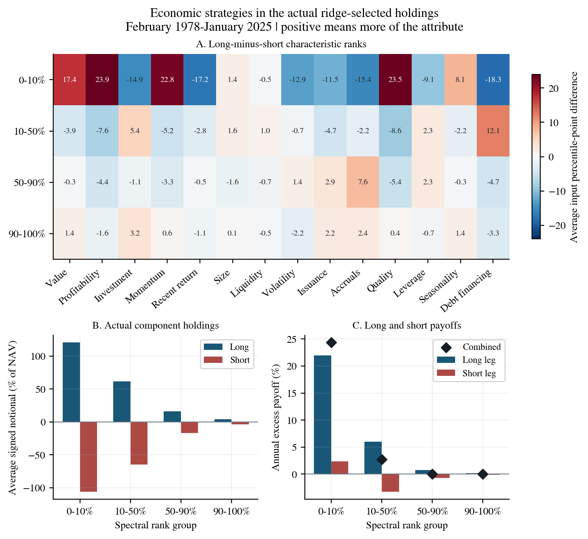
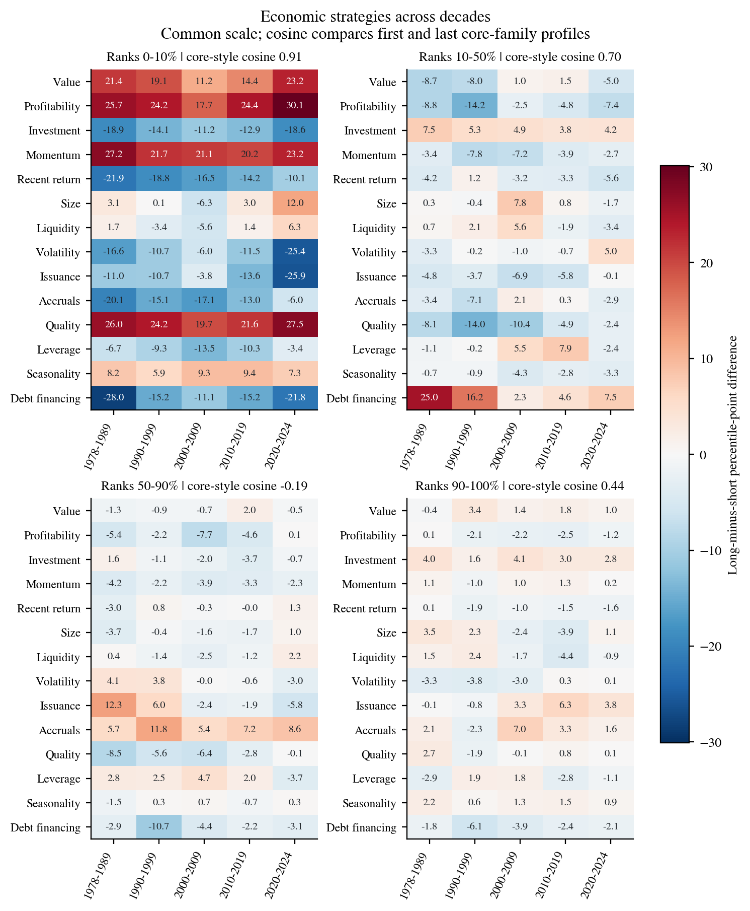
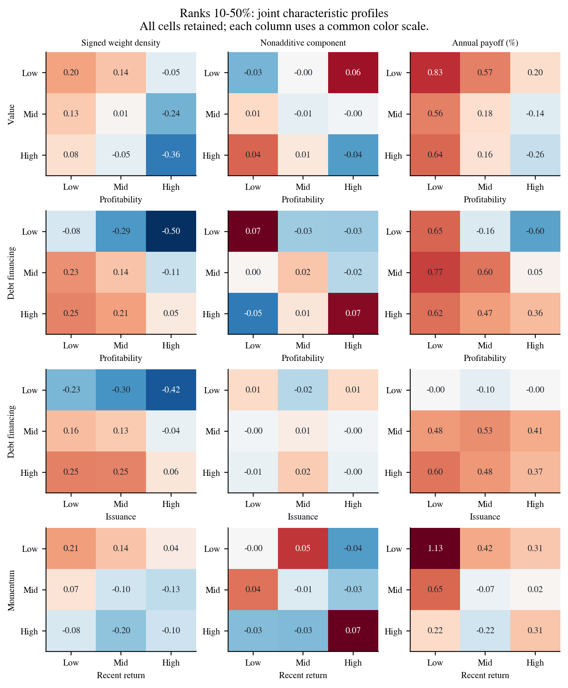
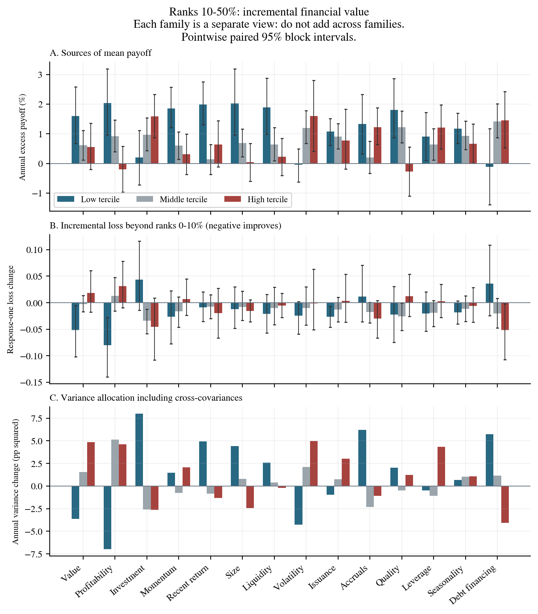

<!doctype html><meta charset="utf-8"><title>Economic investment strategies</title><main style="max-width:1100px;margin:auto;font:18px system-ui"><h1>Economic content of spectral groups</h1><figure><figcaption>EC1_holdings_and_characteristics</figcaption></figure><figure><figcaption>EC2_economic_stability</figcaption></figure><figure><figcaption>EC3_group2_joint_strategies</figcaption></figure><figure><figcaption>EC4_group2_incremental_attribution</figcaption></figure></main>